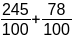
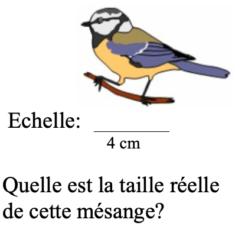

Ecrire le nombre suivant sous la forme d’une somme d’un nombre entier et d’une fraction décimale inférieure à 1. A
=
 |
Un
sac contient 50 billes rouges, vertes et noires.
Combien y a-t-il de billes vertes ? |
Quelle
est la taille réel  |